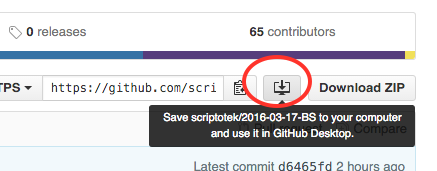

class: center, middle, inverse # Tekstredigering Biblioteksløyd 2016-03-17 .footnote[Slides: https://scriptotek.github.io/2016-03-17-BS/slides/1.2-text.html] --- # Lett tastaturgym som oppvarming - Tastaturet gjør deg mer effektiv, bruk det der du kan<br> <small>(dvs. de fleste steder bortsett fra Alma)</small> - Bruk søk for å starte programmer eller åpne dokumenter: - Windows: Windows-tasten + begynn å skrive navnet + Enter - Mac: Kommando-mellomrom (eller last ned Alfred) - (Ja, la oss åpne Sublime Text) --- # Lett tastaturgym som oppvarming - Vis skrivebord: `Win-D`, åpne filutforsker: `Win-E`, lukk vindu: `Alt-F4`, bytt mellom programmer: `Alt-Tab`, skrive ut: `Ctrl + P` - Redigering: - Klippe ut/kopiere/lime inn tekst: `Ctrl + X`, `Ctrl + C`, `Ctrl + V` - Angre: `Ctrl + Z` (utfør likevel: `Ctrl + Y`) - Lagre: `Ctrl + S` - Eksempel: Sende en epost med Outlook: `Ctrl + N`, mottaker…, `Tab` x 3, emne..., `Tab`, tekst, ... `Ctrl + Enter`. --- # Ren tekst / plain text - Operasjonell definisjon: - Alt som kan leses i Notepad / Sublime Text / Atom / *din favoritteditor*. - *Krever* med andre ord ikke spesialprogrammer for å jobbe med. - Låser deg dermed ikke til ett bestemt program (lock in) - 30 år gamle tekstfiler lar seg lese i dag, og filene du lager i dag lar seg sannsynligvis lese om 30 år.<br> <span style="font-size:80%"> (gitt at maskinene ikke har funnet ut at det er en veldig dårlig idé å la rotete mennesker dille med ting som har med dem å gjøre) </span> --- # Ren tekst / plain text | | Lite egnet | Egnet | Meget godt egnet | |------------------|------------|-------|------------------| | Utveksling | | | ⚫ | | Versjonskontroll | | | ⚫ | | *Store* datasett | ⚫ | | | ??? * Utmerket for utveksling * Utmerket for versjonskontroll (hvorfor?) <!-- bl.a. fordi de ikke krever spesialprogrammer --> --- # Ren tekst / plain text Hvordan «ren»? *Ren tekst* er ikke *formatert tekst*. - Men med *markeringsspråk* som f.eks. HTML og Markdown kan du fremdeles *markere* tekst som skal formateres ved hjelp av språkets *syntaks*. Eksempel: | | HTML | Markdown | |----------------|------------------------------------------------------------------|--------------------------------| | *Vektlagt tekst*<br><small>(emphasized / kursiv)</small> | `<em>Kursiv tekst</em>`<br><small>(i gamle dager: `<i>Kursiv tekst</i>`)</small> | `*Kursiv tekst*` | | **Sterkt vektlagt tekst**<br><small>(strongly emphasized / fet)</small> | `<strong>Fet tekst</strong>`<br><small>(i gamle dager: `<b>Fet tekst</b>`)</small> | `**Fet tekst**` | ??? Markdown er mye enklere enn HTML. Det gjør at det går raskere å skrive, og de begrensede formateringsmulighetene gjør også at man kan bruke mer tid på å faktisk skrive tekst enn å lure på hvordan man skal formatere den. --- # Ren tekst / plain text Eksempler på filformater: * Data: * CSV for tabelldata (ála Excel) * RIS for bibliografier <!-- Men EndNotes interne format .enl er binært --> * JSON / XML for generelle data. * MARC(?) * Dokumenter: * Markdown for ‘enkle’ artikler, dokumentasjon etc. (ála Word) * LaTeX for vitenskapelige artikler med mye matematiske uttrykk * HTML for nettsider * Kode / kildekode --- # Tegnsett/-koding: Bruk UTF-8 <div style="float:right; width:50%; margin-left:20px; border:1px solid #888; "> <img src="assets/UnicodeGrow2b.png" alt="Unicode growth" style="width:100%;"> <div style="padding: 6px; background:white; font-size: 60%;"> Ill.: User:Krauss on <a href="https://commons.wikimedia.org/wiki/File:UnicodeGrow2b.png">Wikimedia Commons</a>. I mars 2016 brukes UTF-8 på > 85 % av alle nettsider. </div> </div> - Tekstfiler er alltid lagret med et bestemt tegnsett. - Som regel trenger du ikke forholde deg til det, men kommer du i situasjoner der du må velge: velg UTF-8.<br> <small>(I UTF-8 opptar hvert tegn 1-4 byte (8 bit) avhengig av hvilke tegn det er: a-z opptar f.eks. 1 byte, mens æøå opptar 2 byte hver).</small> - Sublime Text lagrer (i likhet med de fleste andre programmer i dag) UTF-8 som standard. ??? Med tekstfiler mener jeg "ren tekst-filer" --- # Tegnsett/-koding - Sublime Text lagrer (i likhet med de fleste andre programmer i dag) UTF-8 som standard. - Oppgave: - Lag en ny fil (`Ctrl + N`) som inneholder æøå og lagre den et sted (`Ctrl + S`). - Velg "reopen with encoding" fra File-menyen og velg et *feil* tegnsett, dvs. hva som helst annet enn UTF-8. - Resultatet har et navn: *mojibake* (fra japansk 文字化け) eller *tegnsalat*. - Som her: http://turl.no/14hu --- # Tegnsett/-koding - Sublime Text lagrer (i likhet med de fleste andre programmer i dag) UTF-8 som standard. - Oppgave: - Lag en ny fil (`Ctrl + N`) som inneholder æøå og lagre den et sted (`Ctrl + S`). - Velg "reopen with encoding" fra File-menyen og velg et *feil* tegnsett, dvs. hva som helst annet enn UTF-8. - Resultatet har et navn: *mojibake* (fra japansk 文字化け) eller *tegnsalat*. - Som her: http://turl.no/14hu - Spørsmål: Hvordan ser jeg hvilket tegnsett en fil har i Sublime Text? - Kunsten å google: http://lmgtfy.com/?q=sublime+text+show+encoding ??? - Her kommer vi faktisk innom JSON allerede! - Svar nummer 2.. - Mens vi er her kan vi også sette font-size opp til 12px. --- # Linjeskift <p style="margin-bottom:0;"> <em>Have you ever opened a simple little ASCII text file to see it inexplicably displayed as onegiantunbrokenline?</em> </p> <div style="text-align: right; font-size:80%;"> (<a href="https://blog.codinghorror.com/the-great-newline-schism/">https://blog.codinghorror.com/the-great-newline-schism/</a>) </div> - Linjeskift kodes på ulike måter på Windows (`CRLF`) og Linux/Mac (`LF`). I riktig gamle dager hadde Mac en tredje variant (`CR`). - Notepad skjønner kun `CRLF`, ikke `LF`, mens mer avanserte teksteditorer som Notepad++, Sublime Text, osv.. skjønner begge deler. - Derfor er det stort sett ikke et problem… inntil du f.eks. skal jobbe med versjonskontrollerte filer med noen som bruker et annet system. - Da du installerte Git valgte du forhåpentligvis *Keep "Checkout Windows-style, commit Unix-style line endings" selected*. - Se også https://help.github.com/articles/dealing-with-line-endings/ --- class: center header-left # Tekstredigeringsprogram  ??? Både Vim og Emacs har røtter tilbake til midten av 70-tallet. Fremdeles populære. Svært konfigurerbare og utbyggbare, men man bruker også mye tid på å konfigurere dem... --- # Tekstredigeringsprogram * Det finnes en drøss: https://en.wikipedia.org/wiki/List_of_text_editors * Sublime Text og Atom er to gode programmer som ligner mye på hverandre. * Begge er enkle å komme i gang med, men kan i stor grad utvides og tilpasses etterhvert som man lærer. * Hvilken skal man velge? Ikke godt å si, prøv begge. * Liker du ingen av dem? Prøv f.eks. Notepad++ på Windows eller BBEdit på Mac. --- # Sublime Text Package Control - En stor fordel med teksteditorer som Sublime Text og Atom er at de er utbyggbare. For å komme i gang i Sublime Text må du først sette opp Package Control: - Åpne https://packagecontrol.io/installation i nettleseren din, dobbeltklikk på teksten under "Sublime Text 3" for å velge hele kodesnutten, `Ctrl + C` - Gå tilbake til Sublime, velg `View > Show Console`, lim inn teksten og trykk `Enter`. Wow! Du har akkurat kjørt et Python-script inni Sublime Text! - (I Atom er pakkehåndtering innebygget, så du slipper dette steget) --- # Installere en pakke Vi trenger en pakke til første oppgave. - `Ctrl + Shift + P` åpner kommandopaletten. Her får du tilgang til de aller fleste meny-elementene og mer til uten å måtte bruke musa. - Skriv "package control" for å liste opp alle kommandoer relatert til Package Control - Skriv "install". "Package control: install package" markeres. Trykk `Enter` og vent mens Sublime henter en oppdatert liste over pakker. - Skriv "indent xml" og Enter. --- class: smalltext # Oppgave: Utforske et API - Du har nettopp oppdaget Worldcat xISBN – et API for å slå opp ISBN-numre og hente ut andre utgaver av samme verk + grunnleggende metadata. Du finner dokumentasjonen for API-et på http://xisbn.worldcat.org/xisbnadmin/doc/api.htm - Prøv det første eksempelet: "to request all editions of 0596002815 [Learning Python]" - Prøv å slå opp en annen bok, f.eks. 9781430218333 - Hvis vi skulle brukt API-et i et script ville vi latt isbn-nummeret være en *variabel*. Verdien kunne vi hentet fra f.eks. et tekstfelt der brukeren fyller det inn (slik jeg gjør på https://labs.biblionaut.net/lille_hjelper/) Eller vi kunne f.eks. hatt en liste med isbn-numre som vi lot scriptet slå opp, én for én. - Kopier responsdokumentet (teksten altså) over i et nytt dokument i Sublime Text. - Legg merke til at Sublime skjønner at dette er XML (menyen nederst til høyre). - Bruk "Auto indent" (hint: `Ctrl + Shift + P`) for å gjøre teksten lettere å lese. - Kan du tenke deg en annen måte å strukturere disse dataene på i XML? F.eks. helt uten bruk av attributter? Prøv å omstrukturere dokumentet. - Gå tilbake til nettleseren og prøv å endre `format=xml` til `format=json` i URL-en. - Kopier teksten over i Sublime Text igjen og bruk "auto indent". ??? Vise litt redigering? <!-- # Oppgave: Jobbe med Markdown i Atom # Ren tekst / plain text ## En enkel bibliografisk MARC-post <pre> 001 993710000000291228 020 $a 1-4842-0076-4 020 $a 1-4842-0077-2 040 $a AU-PeEL $b eng $c AU-PeEL $d AU-PeEL 100 1 $a Chacon, Scott. 245 10 $a Pro Git $h [electronic resource]. 246 $a The expert's voice 250 $a 2nd ed. 260 $a Berkeley : $b Apress, $c 2014. </pre> # Ren tekst / plain text ## … i CSV? MARC-poster er vriene å konvertere til tabeller. Hvorfor? Repeterende felt. Flerdimensjonale. ```csv 001,020,150 ost,kake,,s, ``` (merk: JSON-syntaksen definerer) ```json { "001": "993710000000291228", "020": { "a": "1-4842-0076-4", "a": "1-4842-0077-2" }, "author": "Chacon, Scott.", "title": "Pro Git", "???": "The expert's voice", "edition": "2nd ed.", "publisher": "Apress, ", } ``` ```json { "id": "993710000000291228", "isbn": [ "1-4842-0076-4", "1-4842-0077-2" ], "author": "Chacon, Scott.", "title": "Pro Git", "???": "The expert's voice", "edition": "2nd ed.", "publisher": "Apress, ", "" } ``` - TODO: Vise et enkelt strukturert datasett i hhv. JSON, XML, CSV.. og MARC? - Syntaks er ikke viktig... de samme dataene kan kodes på mange måter - Syntaks er viktig... leser man ikke syntaksen leser man ikke dataene.. Syntaksfremheving hjelper - Indentering og luft. Gjør fila mye lettere å lese, script bryr seg ikke. Fila tar større plass, men det bryr vi oss *vanligvis* ikke om. class: center header-left # Vi ser på flere tekstfiler 1. HTML fra Vortex?? 2. Klone et repo med GitHub Desktop? 3. http://data.stortinget.no/eksport --> --- # Sublime Text - Vi har sett: - at programmet prøver å gjette hvilket filformat/språk dokumentet har (menyen nederst til høyre). - at programmet kjenner igjen og fargelegger syntakselementer for språket du har valgt. Dette kalles *syntaksfremheving* (*syntax highlighting*). --- # Oppgave  1. Åpne https://github.com/scriptotek/2016-03-17-BS-samples og klon repoet til din maskin med GitHub Desktop --> 2. Fra GitHub Desktop: Velg "Open in Explorer" 3. Dra mappen over i Sublime Text. Den blir da lagt til under "Folders" i venstremargen. 4. Åpne filen `ic2810.wiki`, men uten å bruke musen! Trykk `Ctrl + P` for å åpne "Open anything", der du kan fuzzy-søke etter filer i alle åpne mapper og undermapper. 5. Hva slags markeringsspråk er dette, mon tro? *Forstår* Sublime Text det? --- # Vi trenger flere pakker! - `Ctrl + Shift + P` åpner kommandopaletten. - Skriv `install` og `Enter` - Skriv "mediawiki" og Enter - `Ctrl + Shift + P` og skriv f.eks. "syntax med". "Set Syntax: MediaWiki" markeres. Trykk `Enter`. - Mens vi er igang: La oss installere `GitGutter` også. - Prøv å redigere wiki-filen du har åpen og se hva som skjer. --- # Oppgave 1. `Ctrl + P` og åpne `sample.csv` 2. Vi vil innkapsle alle navnene i anførselstegn: - Velg et komma, velg alle (`Alt + F3` på win), `Ctrl + ←`, `Shift + Ctrl + →` 3 ganger, `"`. 3. Vi kan nå endre fra tab til komma som skilletegn 4. Vi vil slette den første kolonnen. Bruk "column selection" (hold inne Shift mens du trykker ned høyre museknapp og drar over området du vil velge) 5. Vi vil slette den tredje kolonnen også, men hm, hvordan gjør vi det? Kanskje det finnes en pakke for å jobbe spesielt med CSV-filer? http://lmgtfy.com/?q=sublime+text+csv 6. Det gjorde det. Bruk package control for å installere `Adanced CSV` 7. Slette en kolonne 8. Sortere, osv. 9. Endre datoformatet for alle radene til YYYY-MM-DD --- # Andre ting du kan prøve - Fra kommandopaletten (`Ctrl + Shift + P`): - word-wrap: Skru av og på linjebrytning - uppercase/lowercase/sort - Trykk `Ctrl + X` uten å velge tekst for å klippe ut hele linja du er på - `Ctrl + L` for å velge hele linja du er på, `Ctrl + Shift + ↑` for å flytte linja opp. - Hopp fra ord til ord med piltastene (venstre/høyre) mens du holder inne `Alt`. Holder du inne `Shift` også velger du ord. - Hopp fra fane til fane med `Ctrl` + høyre/venstre Prøv noen av hurtigtastene på http://docs.sublimetext.info/en/latest/reference/keyboard_shortcuts_win.html <!-- - kommentere html - hoppe til matchende parentes med ctrl + m - indentere - autofullføring i html. - distraction free mode, ⌃ + ⇧ + ⌘ + F - søk og erstatt - Flere innsettingspunkt (multiple carets) - Hopping mellom åpnings- og sluttagger i HTMl - Stavekontroll - Vintage mode.. - XML-folding (bytte til Atom) # Oppgaver Vintage mode: Gjør om komma-separert liste med epostadresser til tabell? -->